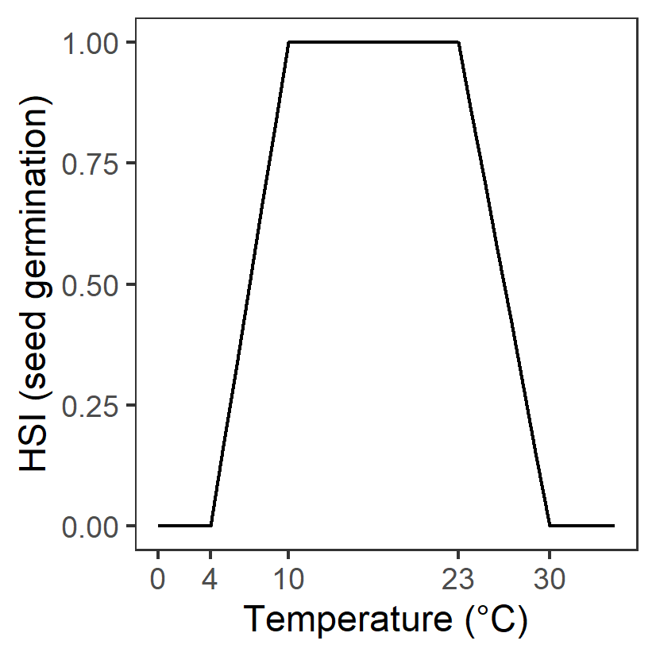
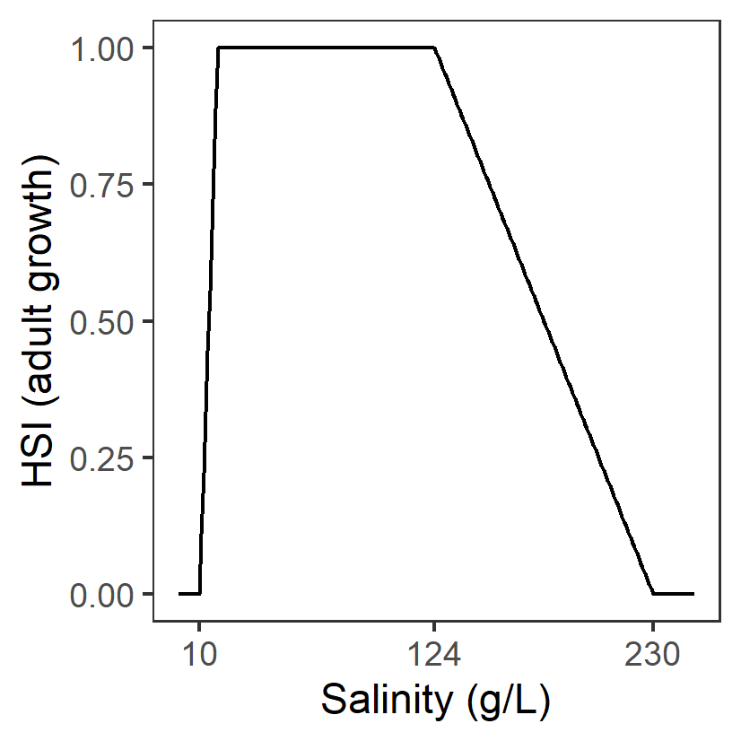
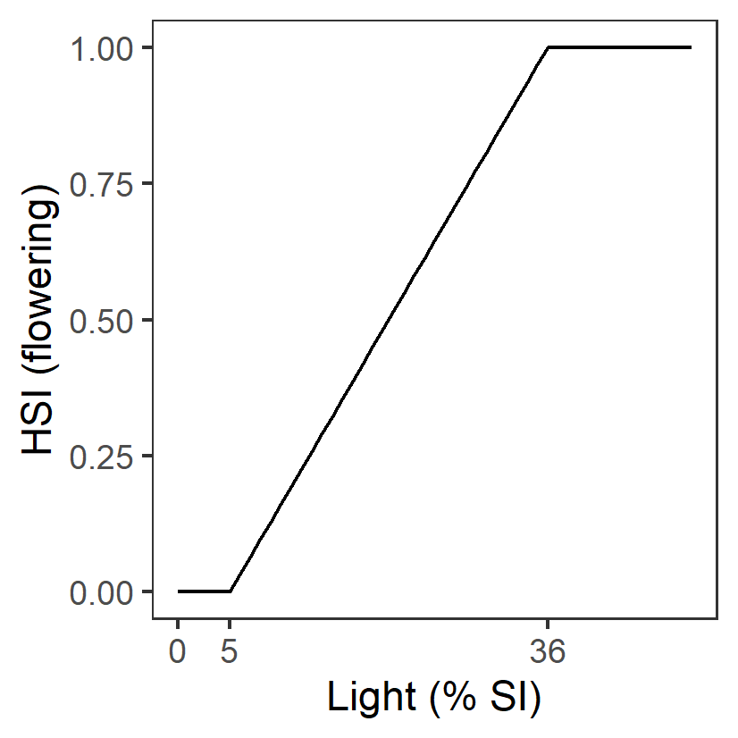

Appendix C : Ruppia Habitat Assessment
Habitat Suitability Index Functions
Habitat suitability functions for Ruppia life stages based on literature review and analyses of HCHB survey data. Note that HSI = 1 under optimal conditions, HSI = 0 under unsuitable conditions, and HSI for sub-optimal is linearly interpolated between these values. Rows shaded in green indicate threshold values were largely sourced from current literature (except text in red), while rows shaded in orange indicate threshold values were estimated.
| Environmental condition (\(i\)) | Threshold | Habitat Suitability Index (\(\Phi\)) function | Habitat Suitability Index (\(\Phi\)) function figure | Rationale | Source | Comment |
|---|---|---|---|---|---|---|
| Turion viability (Jan 1 – Mar 31) | ||||||
| S: Salinity (g/L) |
Generation II: <135 optimal 135 – 165 suboptimal >=165 unsuitable |
\(\Phi^{via}_{S}\)= \[\begin{cases} 0, S\ge 165\\ 1-\frac{S-135}{165-135}, 135 \le S \lt 165 \\ 1, S \lt 135 \end{cases}\] |

|
Turions once formed will lose viability to high salinities (more vulnerable than seeds) during summer dormancy period. Experiments showed that after 60 days of treatment in salinities of 135 – 180 g/L, only 5 – 10% turions sprouted when transferred back to salinities below 120 g/L. Turions only sprouted in 0 g/L (which is unlikely to occur in Ruppia habitat in the lagoon) after salinity treatment at 165 g/L. |
Kim et al. 2013; Kim et al. 2015 |
- |
| Seed germination (Apr 1 – Jun 30) | ||||||
| S: Salinity (g/L) |
Generation 0: <=0.1 unsuitable 0.1-40 optimal 40-85 suboptimal >85 unsuitable |
\(\Phi^{germ}_{S}\)= \[\begin{cases} 0, S\le 0.1 or S\gt 85\\ 1-\frac{S-40}{85-40}, 40 \le S \le 85 \\ 1, 0.1\lt S \lt 40 \end{cases}\] | R. tuberosa seeds with sediment germinated in salinities of 0 to 85g/L with 14-64% germination, but no germination occurred above 85g/L. R. tuberosa seeds without sediment germinated in 0 - 90g/L. In salinity below 40g/L a germination probability of >50% would be expected for seeds of R. tuberosa, but at salinities between 40 and 90 g/L germination would be<50% | Kim et al. 2013; | - | |
| D: Water depth (m) |
Generation 0: Permanent dry: unsuitable <15 days wet (>95% of time): unsuitable 15-42 days wet (>95% of time): suboptimal >42 days wet (>95% of time): optimal Permanently wet: optimal |
- | - | ? | ? | - |
| T: Temperature (°C) |
Generation 0: <4 unsuitable 4-10 suboptimal 10-23 optimal 23-30 suboptimal >30 unsuitable |
\(\Phi^{germ}_{T}\)= \[\begin{cases} 0, T\le 4 or T\gt 30\\ \frac{T-4}{10-4}, 4 \lt T \le 10\\1-\frac{T-23}{30-23}, 23 \lt T \le 30 \\ 1,10\lt T \lt 23 \end{cases}\] |  | Assumed to be the same as adult growth | - | - |
| L: Light (%SI) | - | - | - | - | - | - |
| A: Algal biomass (g DW m-2) | - | - | - | - | - | - |
| Turion sprouting (Apr 1 – Jun 30) | ||||||
| S: Salinity (g/L) |
Generation 0: <=0.1 unsuitable 0.1-20 suboptimal 20-75 optimal 75-125 suboptimal >125 unsuitable |
\(\Phi^{spr}_{S}\)= \[\begin{cases} 0, S\le 0.1 or S\gt 125\\ \frac{S-0.1}{20-0.1}, 0.1 \lt S \le 20\\1-\frac{S-75}{125-75}, 75 \lt S \le 125 \\ 1,20\lt S \lt 75 \end{cases}\] | Turions of R. tuberosa germinated at salinities of 0 to 125g/L, with 14 - 74% germination, but no germination occurred above 125 g/L. Suboptimal thresholds based on Fig.2 in Kim et al. 2013 |
Kim et al. 2013; Asanopoulos & Waycott 2020 Fig.5 |
- | |
| D: Water depth (m) |
Generation 0: <=0.01 unsuitable 0.01-0.2 suboptimal >0.2 optimal |
- |

|
Water depth needs to be sufficient to cover plants during growth. | Collier et al. 2017 | - |
| T: Temperature (°C) |
Generation 0: <4 unsuitable 4-10 suboptimal 10-23 optimal 23-30 suboptimal >30 unsuitable |
\(\Phi^{spr}_{T}\)= \[\begin{cases} 0, T\le 4 or T\gt 30\\ \frac{T-4}{10-4}, 4 \lt T \le 10\\1-\frac{T-23}{30-23}, 23 \lt T \le 30 \\ 1,10\lt T \lt 23 \end{cases}\] | Assumed to be the same as adult growth | - | - | |
| L: Light (%SI) |
Generation 0: <=5 unsuitable 5-36 suboptimal >=36 optimal |
\(\Phi^{spr}_{L}\)= \[\begin{cases} 0, L\lt 5\\ \frac{L-5}{36-5}, 5 \le L \lt 36 \\ 1,L \gt 36 \end{cases}\] |

|
Assumed to be the same as adult growth | - | - |
| A: Algal biomass (g DW m-2) | - | - | - | - | - | - |
| Adult plant growth (Jun 1 – Sep 30) | ||||||
| S: Salinity (g/L) |
Generation 0: <10 unsuitable 10-19 suboptimal 19-124 optimal 124-230 suboptimal >230 unsuitable |
\(\Phi^{adt}_{S}\)= \[\begin{cases} 0, S\lt 10 or S\gt 230\\ \frac{S-10}{19-10}, 10 \le S \lt 19\\1-\frac{S-124}{230-124}, 124 \lt S \le 230\\ 1,19\le S \le 124 \end{cases}\] |  | A primary factor driving the distribution and abundance of Ruppia in the southern Coorong. The highest abundance of R. tuberosa found at salinities from 19 to 70 g/L and declined sharply in response to increasing salinity from 70 to 109 g/L, but increased again between 116 and 124 g/L. Table 2 in Collier et al. 2017 indicated R. tuberosa occurred at up to 230 g/L in other Lakes but source of data is not clear. Lower threshold source based on Fig.5 in Asanopoulos & Waycott 2020 |
Brock 1982; Kim et al. 2015; Collier et al. 2017; Asanopoulos & Waycott 2020 |
The model relating shoot density to physicochemical conditions explained 73% of variation (Kim et al. 2015) |
| D: Water depth (m) |
Generation 0 & II: < 10 % of time wet: unsuitable >= 10 % of time wet: suitable |
- | - | A primary factor driving the Ruppia distribution in the southern Coorong. Water depth needs to be sufficient to cover plants during growth. |
Kim et al. 2015; Collier et al. 2017 |
R. tuberosa shoots abundances were observed to be highest at water depths between 0.2 and 0.6 m in Coorong. However this depth preference is likely the result of trade-off between light requirement (thresholds included in \(\Phi^{adt}_{L}\)) for photosynthesis and preventing desiccation. |
| T: Temperature (°C) |
Generation 0: <4 unsuitable 4-20 suboptimal 10-23 optimal 23-30 suboptimal >30 unsuitable |
\(\Phi^{adt}_{T}\)= \[\begin{cases} 0, T\le 4 or T\gt 30\\ \frac{T-4}{10-4}, 4 \lt T \le 10\\1-\frac{T-23}{30-23}, 23 \lt T \le 30 \\ 1,10\lt T \lt 23 \end{cases}\] |

|
The optimum temperature for photosynthesis of Ruppia sp. is approximately 20 – 23°C. At temperatures that are ≥30°C biomass declines, and if sustained, there may be no reproductive output. Lower threshold source is unclear | Santamarı́a & Hootsmans 1998 cited in Collier et al. 2017. | The optimum is not specifically for R. tuberosa. |
| L: Light (%SI) |
Generation 0: <=5 unsuitable 5-36 suboptimal >=36 optimal |
\(\Phi^{adt}_{L}\)= \[\begin{cases} 0, L\lt 5\\ \frac{L-5}{36-5}, 5 \le L \lt 36 \\ 1,L \gt 36 \end{cases}\] |

|
There was a significant (p <0.001) effect of the light treatment on biomass of R. tuberosa after 8 weeks of shading. Biomass was significantly reduced in the 5% light treatment compared to the 36, 63, 86 and 100% light treatment. | Collier et al. 2017 cited in Asanopoulos & Waycott 2020 | - |
| A: Algal biomass (g DW m-2) |
Generation 0: <=100 optimal 100-368 suboptimal >368 unsuitable |
\(\Phi^{adt}_{A}\)= \[\begin{cases} 0, A\gt 368\\ 1-\frac{A-100}{368-100}, 100 \lt A \le 368 \\ 1, A \le 100 \end{cases}\] | Surface mats formed by the filamentous algae shade submerged plants and entangle flowers/fruits, causing them to break away from stems before they mature. It was suggested that to maintain and improve the condition and resilience of the Ruppia community, algal mat formation should be reduced to less than 100 g/DW per m2. | Lewis et al. 2022 | - | |
| Flowering and seed set (Sep 1 – Dec 31) | ||||||
| S: Salinity (g/L) |
Generation 0: <12 unsuitable 12-47 suboptimal 47-62 optimal 62-100 suboptimal >100 unsuitable |
\(\Phi^{flw}_{S}\)= \[\begin{cases} 0, S\lt 47 or S\gt 100\\ \frac{S-12}{47-12}, 12 \le S \lt 47\\1-\frac{S-62}{100-62}, 62 \lt S \le 100\\ 1,47\le S \le 62 \end{cases}\] | Flower abundance was highest at salinities between ~47 and 62 g/L and flower abundance was lowest at >70 g/L and <47 g/L. The highest seed density was maintained at salinities of 26–62 g/L. Upper and lower thresholds were based on Collier et al. 2017 and Fig.5 in Asanopoulos & Waycott 2020. Original source unclear |
Kim et al. 2015; Collier et al. 2017; Asanopoulos & Waycott 2020 |
The model relating flower density to physicochemical conditions explained 76% of variation but only 27% of the seed abundance variance was explained (Kim et al. 2015). | |
| D: Water depth (m) |
Generation 0: <0.1 unsuitable 0.1-0.4 optimal 0.4-0.9 suboptimal >0.9 unsuitable |
- |

|
R. tuberosa flowers need to reach the water surface for pollination. The highest density of flowering has been observed in water depths from 0.1 to 0.4 m and seed density of mature plants declines at depths greater than 0.4 m. Upper thresholds based on Fig.4 in Kim et al. 2015. |
Kim et al. 2015; Collier et al. 2017; |
Upper threshold for seed production is 0.8m (>0.8m unsuitable) but only 27% of the seed abundance variance was explained (together with salinity), therefore thresholds for flowering was adopted here |
| T: Temperature (°C) |
Generation 0: <4 unsuitable 4-20 suboptimal 20-23 optimal 23-30 suboptimal >30 unsuitable |
\(\Phi^{flw}_{T}\)= \[\begin{cases} 0, T\le 4 or T\gt 30\\ \frac{T-4}{10-4}, 4 \lt T \le 10\\1-\frac{T-23}{30-23}, 23 \lt T \le 30 \\ 1,10\lt T \lt 23 \end{cases}\] | Assumed to be the same as adult growth | - | - | |
| L: Light (%SI) |
Generation 0: <=5 unsuitable 5-36 suboptimal >=36 optimal |
\(\Phi^{flw}_{L}\)= \[\begin{cases} 0, L\lt 5\\ \frac{L-5}{36-5}, 5 \le L \lt 36 \\ 1,L \gt 36 \end{cases}\] |  | Assumed to be the same as adult growth | - | - |
| A: Algal biomass (g DW m-2) |
Generation 0: <=100 optimal 100-184 suboptimal >184 unsuitable |
\(\Phi^{flw}_{A}\)= \[\begin{cases} 0, A\gt 184\\ 1-\frac{A-100}{184-100}, 100 \lt A \le 184 \\ 1, A \le 100 \end{cases}\] | Surface mats formed by the filamentous algae shade submerged plants and entangle flowers/fruits, causing them to break away from stems before they mature. It was suggested that to maintain and improve the condition and resilience of the Ruppia community, algal mat formation should be reduced to less than 100 g/DW per m2. Upper thresholds derived from analysis of HCHB survey data (Figure 8.9) | Lewis et al. 2022 | - | |
| Turion formation (Sep 1 – Dec 31) | ||||||
| S: Salinity (g/L) |
Generation 0: <40 unsuitable 40-70 suboptimal 70-160 optimal 160-230 suboptimal >230 unsuitable |
\(\Phi^{tur}_{S}\)= \[\begin{cases} 0, S\lt 40 or S\gt 230\\ \frac{S-40}{70-40}, 40 \le S \lt 70\\1-\frac{S-160}{230-160}, 160 \lt S \le 230\\ 1,70\le S \le 160 \end{cases}\] | Thresholds were determined considering several sources: 1) The highest turion densities in the Coorong have been observed at salinity between ~124 g/L and 160 g/L and are most likely to occur where salinities are over 70 g/L. This study was conducted during a year with extremely high salinities in the Coorong; 2) Analysis of 2020 – 2021 HCHB survey data indicate high turion abundance between ~70 – 120 g/L but can occur in salinity at as low as ~40g/L; 3) Upper threshold based on Fig.5 in Asanopoulos & Waycott 2020 | - | - | |
| D: Water depth (m) |
Generation 0 &II: < 10 % of time wet: unsuitable >= 10 % of time wet: suitable |
- | - | Desiccation during the reproductive window (spring/summer) prevents turion production, reducing the regeneration of the population in subsequent growing seasons. |
Kim et al. 2015; Collier et al. 2017; Asanopoulos & Waycott 2020 |
Highest densities of turions were observed in 0.1–0.4 m water depths. However this depth preference is likely the result of trade-off between light requirement (thresholds included in \(\Phi^{tur}_{L}\))) for photosynthesis and preventing desiccation |
| T: Temperature (°C) |
Generation 0: <4 unsuitable 4-20 suboptimal 10-23 optimal 23-30 suboptimal >30 unsuitable |
\(\Phi^{tur}_{T}\)= \[\begin{cases} 0, T\le 4 or T\gt 30\\ \frac{T-4}{10-4}, 4 \lt T \le 10\\1-\frac{T-23}{30-23}, 23 \lt T \le 30 \\ 1,10\lt T \lt 23 \end{cases}\] | Assumed to be the same as adult growth | - | - | |
| L: Light (%SI) |
Generation 0: <=5 unsuitable 5-36 suboptimal >=36 optimal |
\(\Phi^{tur}_{L}\)= \[\begin{cases} 0, L\lt 5\\ \frac{L-5}{36-5}, 5 \le L \lt 36 \\ 1,L \gt 36 \end{cases}\] |
|
Assumed to be the same as adult growth | - | - |
| A: Algal biomass (g DW m-2) | - | - | - | - | - | - |
Model assessment - historical (pre-HCHB) data
i. Field seed/flower count (obs) vs. HSI flowering and seed set (model)
The average number of seeds per core sampled in January from 2017 to 2019 were compared with the flowering and seed set HSI of the previous year (2016 – 2018) (Figure 9.6 - Figure 9.10); this is a result of integrating across the average conditions between August and December in each year. In contrast, the number of flowerheads was sampled in November 2016 only, and so was compared with HSI flowering and seed set of the same year.
Surveys conducted during other times of the year, such as May or July, are more complicated to validate against, since during this period some of the seeds that were produced (during last spring) would have germinated. Therefore, the seed abundance at this time is a combined result of previous year’s seed production success, and current year’s seed germination rate.
In general, the spatial distribution of seeds and flowers in the field agreed with model outputs (Figure 9.6 - Figure 9.10). For example, higher number of seeds and flowers were often found in the middle lagoon, overlapping with areas where higher HSIs are concentrated. In comparison, north and/or south lagoons recorded lower density of seeds and/or flowers, matching the lower HSIs or limited suitable habitat extent in these regions. However, there were some disagreements between the modelled HSI and field data in the relative abundance of seeds recorded in the south and north lagoons. Specifically, seeds appeared to be mostly absent in the north lagoon between 2017 and 2019, while they had been in higher abundance in the south consistently. Current model predictions however, predicted that the south and north lagoon had similar habitat suitability for flowering and seed set.
In addition to the visual comparison between model outputs and field observations, a quantitative validation was conducted between seed abundance in 2019 and HSI flowering and seed set in 2018 (Figure 9.8 and Figure 9.9). A 600-meter radius buffer was created around each sampling site, and HSI value in each cell that falls within this buffer were averaged and compared with seed count at each site.

Figure 9.6: Average seed count per core in 2017 January (circles) overlaid on HSI model output for flowering and seed set in 2016. Inset on top right shows the overall habitat suitability for the flowering and seed set phase of Ruppia as a function of salinity f(S), light f(l), water level f(WL), and presence of filamentous algae f(FA). An HSI of 0 (dark purple) represents unsuitable habitat conditions, while an HSI of 1 represents optimal conditions (yellow).

Figure 9.7: Average seed count per core in 2018 January (circles) overlaid on HSI model output for flowering and seed set in 2017. Inset on top right shows the overall habitat suitability for the flowering and seed set phase of Ruppia as a function of salinity f(S), light f(l), water level f(WL), and presence of filamentous algae f(FA). An HSI of 0 (dark purple) represents unsuitable habitat conditions, while an HSI of 1 represents optimal conditions (yellow).

Figure 9.8: Average seed count per core in 2019 January (circles) overlaid on HSI model output for flowering and seed set in 2018. A HSI of 0 (dark purple) represents unsuitable habitat conditions, while an HSI of 1 represents optimal conditions (yellow). Inset shows the size of the buffers created around sampling sites.

Figure 9.9: Scatter and box plot of average seed count per core in 2019 January versus averaged HSI for flowering and seed set in 2018 in the entire lagoon (top panel: red - north lagoon sites; blue - south lagoon sites) and south lagoon (bottom panel). Text on top of each data point indicates site name.
The modelled Ruppia HSI prediction for flowers correlates reasonably well with the observed seed count measured at the beginning of the following season, particularly in the South Lagoon (Figure 9.9).

Figure 9.10: Average flowerhead count per square meter quadrat in 2016 November (circles) overlaid on HSI model output for flowering and seed set in 2016. Inset on top right shows the overall habitat suitability for the flowering and seed set phase of Ruppia as a function of salinity f(S), light f(l), water level f(WL), and presence of filamentous algae f(FA). An HSI of 0 (dark purple) represents unsuitable habitat conditions, while an HSI of 1 represents optimal conditions (yellow).
ii. Field turion count (obs) vs. HSI turion formation (model)
Average number of turions (type I and II) per core sampled in January in 2016, 2017 and 2019 were compared with HSI turion formation of the previous year (2015, 2016 and 2018) (Figure 9.11 - Figure 9.13), which is a result of integrated average condition between August and December in each year.
Surveys conducted during other times of the year, such as May or July would be less suitable for validation, as some of the turions formed during previous spring should have had sprouted in May or July in the current year. Such validation will be more complicated as turion abundance in the field is a combined result of previous year’s turion formation success and current year’s turion sprouting rate.
Visual validation of turions showed mixed results (Figure 9.11 - Figure 9.13). HSIs for turion formation in 2015 were generally consistent with turion distribution and abundance in 2016 January, where south lagoon observed more suitable environmental conditions than the north, and field records showed a similar pattern (Figure 9.11). However, the model seemed to underpredict habitat suitability in the south lagoon in 2016 and 2018 (Figure 9.12 and Figure 9.13).

Figure 9.11: Average turion count (type I and II) per core in 2016 January (circles) overlaid on HSI model output for turion formation in 2015. Inset on top right shows the overall habitat suitability for the turion formation phase of Ruppia as a function of salinity f(S), light f(l), water level f(WL), and presence of filamentous algae f(FA). An HSI of 0 (dark purple) represents unsuitable habitat conditions, while an HSI of 1 represents optimal conditions (yellow).
Figure 9.12: HSI turion Average turion count (type I and II) per core in 2017 January (circles) overlaid on HSI model output for turion formation in 2016. Inset on top right shows the overall habitat suitability for the turion formation phase of Ruppia as a function of salinity f(S), light f(l), water level f(WL), and presence of filamentous algae f(FA). An HSI of 0 (dark purple) represents unsuitable habitat conditions, while an HSI of 1 represents optimal conditions (yellow).

Figure 9.13: Average turion count (type I and II) per core in 2019 January (circles) overlaid on HSI model output for turion formation in 2018. Inset on top right shows the overall habitat suitability for the turion formation phase of Ruppia as a function of salinity f(S), light f(l), water level f(WL), and presence of filamentous algae f(FA). An HSI of 0 (dark purple) represents unsuitable habitat conditions, while an HSI of 1 represents optimal conditions (yellow).
iii. Field shoot count (obs) vs. HSI sexual and asexual combined (model)
Average number of shoots (green and brown) per core sampled in January in 2018 and 2019 were compared with combined overall HSI for successful completions of sexual or asexual life cycle in the previous year (2017 and 2018) (Figure 9.14 and Figure 9.15), which is a result of integrating the HSI results for adult plants, flowering and seed set, seed germination, turion sprouting and turion formation.
Although a proportion of Ruppia might have died off in January, the total shoot count including green and brown materials should be a relatively good indicator of environmental conditions experienced in the previous year. Presence of shoots could be a result of sexual or asexual reproduction success, and hence HSI sexual and asexual were integrated for validation.
Similar to turion predictions, the HSI model seemed to relatively underpredict the habitat suitability in the south lagoon, and overpredict in the north in both years (Figure 9.14 and Figure 9.15). Since the model result is an integration of all life stages of Ruppia, this mismatch may be stemmed from a particular life stage, such as the turion formation stage described in the above section.

Figure 9.14: Average shoot count (green and brown) per core in 2018 January (circles) overlaid on HSI model output for combined sexual and asexual cycle in 2017. Inset on top right shows the overall habitat suitability for the completion of sexual and asexual life cycle of Ruppia by integrating the HSI results for each life stage. An HSI of 0 (dark purple) represents unsuitable habitat conditions, while an HSI of 1 represents optimal conditions (yellow).

Figure 9.15: Average shoot count (green and brown) per core in 2019 January (circles) overlaid on HSI model output for combined sexual and asexual cycle in 2018. Inset on top right shows the overall habitat suitability for the completion of sexual and asexual life cycle of Ruppia by integrating the HSI results for each life stage. An HSI of 0 (dark purple) represents unsuitable habitat conditions, while an HSI of 1 represents optimal conditions (yellow).
Model assessment - HCHB data version 1
i. Field seagrass shoot count Sep 2020 (obs) vs. HSI germination & sprouting Jul 2020 (model)
Average number of shoots per core sampled in Sep - Oct 2020 were compared with combined HSI for seed germination and turion sprouting in the same year (Figure 9.16). By default, the integration period for germination and sprouting is Apr – Jul, therefore there was around a two-month gap between the end of the model period and the start of the survey period. In addition to the 600m-radius buffer, a 100m-radius buffer was also used as a comparison since there were far more survey sites throughout the lagoon during HCHB and sites were relatively close to each other. 100m is approximately the average width of a grid cell on the model domain. In general, model outputs agreed with field shoot abundance, despite the two-month gap where environmental conditions were not accounted for. Both field data and HSI outputs suggested higher shoot abundance in the north lagoon compared to the south, likely due to a lower salinity level in the north. Using a 100m-radius buffer seemed to result in a better model fit. It is worth noting that the seagrass shoot count includes several seagrass species in the lagoon such as R. tuberosa and Althenia cylindrocarpa, whereas the environmental thresholds for seed germination and turion sprouting were derived from experiments on R. tuberosa only (Kim et al. 2013). Although these species can co-occur and may have overlapping requirements on some environmental aspects (Asanopoulos & Waycott 2020), care should be taken when interpreting validation results.

Figure 9.16: Average shoot count per core in 2020 Sep (circles) overlaid on HSI model output for germination and sprouting in 2020 (right), and validation plots for the entire lagoon (top left, 600m buffer), entire lagoon separated into north and south (middle left, red: north, blue: south, 100m buffer), and south lagoon only (bottom left, 100m buffer). An HSI of 0 (dark purple) represents unsuitable habitat conditions, while an HSI of 1 represents optimal conditions (yellow).
ii. Field flower count Sep 2020 (obs) vs. HSI flowering and seed set Dec 2020 (model) Average number of flowers per core sampled in Sep - Oct 2020 were compared with HSI for flowering and seed set in the same year (Figure 9.17). By default, the integration period for flowering and seed set is Aug – Dec, which included approximately a two-month period after the survey. Both 600m-radius and 100m-radius buffer were used as a comparison. Model output generally agreed with field flower abundance, in that the condition in the south lagoon was mostly unsuitable where no flowers were recorded, while the conditions around the middle and north lagoon were more suitable where Ruppia was flowering. Using a 100m-radius buffer resulted in an improved validation score.

Figure 9.17: Average flower count per core in 2020 Sep (circles) overlaid on HSI model output for flowering and seed set in 2020 (right), and validation plots for the entire lagoon (top left, 600m buffer), entire lagoon separated into north and south (middle left, red: north, blue: south, 100m buffer), and south lagoon only (bottom left, 100m buffer). An HSI of 0 (dark purple) represents unsuitable habitat conditions, while an HSI of 1 represents optimal conditions (yellow).
iii. Field flower count Sep 2020 (obs) vs. HSI sexual Dec 2020 (model) Average number of flowers per core sampled in Sep - Oct 2020 were compared with HSI for overall sexual reproduction the same year (Figure 9.18), which is an integration of habitat suitability for seed germination, adult growth and flowering and seed set over Apr - Dec. Validation results were similar to the previous case (ii).

Figure 9.18: Average flower count per core in 2020 Sep (circles) overlaid on HSI model output for overall probability of completing sexual reproduction cycle in 2020 (right), and validation plots for the entire lagoon (separated into north and south (top left, red: north, blue: south, 100m buffer), and south lagoon only (bottom left, 100m buffer). An HSI of 0 (dark purple) represents unsuitable habitat conditions, while an HSI of 1 represents optimal conditions (yellow).
iv. Field seed count Mar 2021 (obs) vs. HSI flowering and seed set Dec 2020 (model) Average number of seeds per core sampled in Mar – Apr 2021 were compared with HSI for flowering and seed set in the previous year (Figure 9.19) using both 600m and 100m-radius buffer. Seed abundance appeared to be less predictable than shoots or flowers, likely because once detached from mother plant, seeds can disperse with water currents before settling down. Kim et al. (2015) studied the physiochemical influences on R. tuberosa abundance in the Coorong and found that only 27% of the seed abundance variation could be explained by salinity, depth and turbidity, which was much less than shoots, flowers or turions. Our NPMR results indicated a similar trend on the HCHB data (Table 8.2). Using the bigger buffer produced slightly higher validation scores (R = 0.35) than the smaller buffer (R = 0.25, Figure 9.19), which may be a reflection of the Ruppia seeds being able to disperse a small distance (i.e. > 100m).
Figure 9.19: Average seed count per core in 2021 Mar (circles) overlaid on HSI model output for flowering and seed set in 2020 (right), and validation plots for the entire lagoon (top left, 600m buffer), entire lagoon separated into north and south (middle left, red: north, blue: south, 100m buffer), and south lagoon only (bottom left, 100m buffer). An HSI of 0 (dark purple) represents unsuitable habitat conditions, while an HSI of 1 represents optimal conditions (yellow).
v. Field seed count Mar 2021 (obs) vs. HSI sexual Dec 2020 (model) Average number of seeds per core sampled in Mar – Apr 2021 were compared with HSI for overall sexual reproduction in the previous year (Figure 9.20). This produced similar results to the above case (iv).
Figure 9.20: Average seed count per core in 2021 Mar (circles) overlaid on HSI model output for overall probability of completing sexual reproduction cycle in 2020 (right), and validation plots for the entire lagoon separated into north and south (top left, red: north, blue: south, 100m buffer), and south lagoon only (bottom left, 100m buffer). An HSI of 0 (dark purple) represents unsuitable habitat conditions, while an HSI of 1 represents optimal conditions (yellow).
vi. Field turion count Sep 2020 (obs) vs. HSI turion formation Dec 2020 (model) Average number of turions per core sampled in Sep - Oct 2020 were compared with HSI for turion formation in the same year (Figure 9.21) using a 600m buffer. Model predictions did not agree well with field turion abundance, as the environmental thresholds used for turion formation (derived from Kim et al. 2015) was likely biased from a year with very high salinities (discussed in Section 8.1.3.1).

Figure 9.21: Average turion count per core in 2020 Sep (circles) overlaid on HSI model output for turion formation in 2020 (right), and validation plots for the entire lagoon (left, 600m buffer). An HSI of 0 (dark purple) represents unsuitable habitat conditions, while an HSI of 1 represents optimal conditions (yellow).
vii. Field turion count Mar 2021 (obs) vs. HSI turion formation Dec 2020 (model) Average number of turions per core sampled in Mar - Apr 2020 were compared with HSI for turion formation in the previous year (Figure 9.22) using a 600m buffer. Validation results were similar to the previous case (vi).

Figure 9.22: Average turion count per core in 2021 Mar (circles) overlaid on HSI model output for turion formation in 2020 (right), and validation plots for the entire lagoon (left, 600m buffer). An HSI of 0 (dark purple) represents unsuitable habitat conditions, while an HSI of 1 represents optimal conditions (yellow).
viii. Field algae cover % Sep 2020 (obs) vs. HSI Ulva Nov 2020 or biomass Nov 2020 (model) Site macroalgae cover proportion in Sep – Oct 2020 were compared with Ulva HSI and biomass in the same year (Figure 9.23 and Figure 9.24). Compared to modelled Ulva biomass, Ulva HSI prediction correlates better with the observed algae cover. This implies the growth controls (as embodied in the HSI) are well resolved, but the seasonal factors leading to biomass accumulation are more complicated and need further refinement. The HSI range was however quite restricted.

Figure 9.23: Site algae cover (%) in 2020 Sep (circles) overlaid on HSI model output for Ulva in 2020 (right), and validation plots for the entire lagoon (left, 600m buffer). An HSI of 0 (dark purple) represents unsuitable habitat conditions, while an HSI of 1 represents optimal conditions (yellow).

Figure 9.24: Site algae cover (%) in 2020 Sep (circles) overlaid on model output for Ulva biomass (g) in 2020 (right), and validation plots for the entire lagoon (left, 600m buffer). An HSI of 0 (dark purple) represents unsuitable habitat conditions, while an HSI of 1 represents optimal conditions (yellow).
Model assessment - HCHB data version 2
The major updates of this validation cycle include: 1) a tailored model integration period that corresponds to each HCHB survey season so that model output can be directly compared with field data at the right time. For example, the default model output for HSI sexual is a result of integration of environmental conditions over the entire Ruppia growing season up to Dec, which goes beyond the Sep/Oct survey period, making field data and model results less comparable. Therefore, for validation against the Sep/Oct HCHB field data, models were configured to integrate HSI of each life-stage only to end of Sep; 2) pairing strategies between field data and model output have been refined. For example, field flower count is now being compared with modelled HSI sexual, which takes into account the probability of Ruppia going through germination/sprouting, adult growth and flowering, instead of the probability of flowering only (HSI flowering); 3) calculation of mean HSI within the buffer was improved from a simple arithmetic mean to a spatial (area-weighted) mean (Table 8.9). This is particularly relevant for sampling sites around the northern end of south lagoon, where grid cells vary significantly in size (Figure 9.25). Validation results are shown below.

Figure 9.25: An example output of the middle lagoon showing Ruppia sampling sites (red circles) with 600m-radius buffer, overlaid on model HSI results (dark purple to yellow, representing unsuitable to optimal habitat conditions). For site S06W (red circle on the left), grid cells within the buffer show large variation in size (area).
i. Field seagrass shoot count Sep 2020 (obs) vs. HSI germination & sprouting & adult growth Sep 2020 (model)
Average number of shoots per core sampled in Sep - Oct 2020 were compared with combined HSI for seed germination, turion sprouting and adult growth up to end of Sep in the same year (Figure 9.26). This has resulted in similar validation scores compared to HCHB validation version 1, which did not include the adult growth stage between Jun and Sep, possibly because the 1) adult stage is more resilient to a wide range of conditions than germination or sprouting; and 2) conditions in Jun – Sep in the lagoon are usually less extreme. Therefore, adding the HSI for adult life-stage during this period will not necessarily restrict (lower) the overall HSI.


Figure 9.26: Average shoot count per core in 2020 Sep (circles) overlaid on HSI model output for germination, sprouting and adult growth up to end of Sep in 2020 (top), and validation plots for the entire lagoon separated into north and south (middle, red: north, blue: south, 100m buffer), and south lagoon only (bottom, 100m buffer). An HSI of 0 (dark purple) represents unsuitable habitat conditions, while an HSI of 1 represents optimal conditions (yellow).
ii. Field flower count Sep 2020 (obs) vs. HSI sexual Sep 2020 (model)
Average number of flowers per core sampled in Sep - Oct 2020 were compared with HSI for sexual reproduction up to end of Sep in the same year (Figure 9.27. This has resulted in slightly better validation scores for the whole Coorong compared to HCHB validation version 1.


Figure 9.27: Average flower count per core in 2020 Sep (circles) overlaid on HSI model output for sexual reproduction to end of Sep in 2020 (top), and validation plots for the entire lagoon separated into north and south (middle, red: north, blue: south, 100m buffer), and south lagoon only (bottom, 100m buffer). An HSI of 0 (dark purple) represents unsuitable habitat conditions, while an HSI of 1 represents optimal conditions (yellow).
iii. Field seed count Mar 2021 (obs) vs. HSI sexual Dec 2020 (model)
Average number of seeds per core sampled in Mar were compared with HSI for sexual reproduction up to the end of 2020 (Figure 9.28). This has resulted in slightly better validation scores compared to HCHB validation version 1.

Figure 9.28: Average seed count per core in 2021 Mar (circles) overlaid on HSI model output for sexual reproduction to end of 2020 (top), and validation plots for the entire lagoon separated into north and south (middle, red: north, blue: south, 100m buffer), and south lagoon only (bottom, 100m buffer). An HSI of 0 (dark purple) represents unsuitable habitat conditions, while an HSI of 1 represents optimal conditions (yellow).
iv. Field turion count Sep 2020 (obs) vs. HSI asexual Sep 2020 (model)
Average number of turions per core sampled in Sep 2020 were compared with HSI for asexual reproduction up to the end of Sep 2020 (Figure 9.29). Validation results for turion occurrences should be interpreted with caution, as the environmental thresholds used for turion formation (derived from Kim et al. 2015) was likely biased from a year with very high salinities (discussed in Section 8.1.3.1).


Figure 9.29: Average turion count per core in 2020 Sep (circles) overlaid on HSI model output for asexual reproduction to end of Sep in 2020 (top), and validation plots for the entire lagoon separated into north and south (middle, red: north, blue: south, 100m buffer), and south lagoon only (bottom, 100m buffer). An HSI of 0 (dark purple) represents unsuitable habitat conditions, while an HSI of 1 represents optimal conditions (yellow).
v. Field turion count Mar 2021 (obs) vs. HSI asexual Dec 2020 (model)
Average number of turions per core sampled in Mar - Apr 2021 were compared with HSI for asexual reproduction to the end of 2020 (Figure 9.30). Validation results for turion occurrences should be interpreted with caution, as the environmental thresholds used for turion formation (derived from Kim et al. 2015) was likely biased from a year with very high salinities (discussed in Section 8.1.3.1).


Figure 9.30: Average turion count per core in 2021 Mar (circles) overlaid on HSI model output for asexual reproduction to end of 2020 (top), and validation plots for the entire lagoon separated into north and south (middle, red: north, blue: south, 100m buffer), and south lagoon only (bottom, 100m buffer). An HSI of 0 (dark purple) represents unsuitable habitat conditions, while an HSI of 1 represents optimal conditions (yellow).
vi. Field algae cover % Sep 2020 (obs) vs. HSI Ulva Sep 2020 (model)
Site macroalgae cover proportion in Sep - Oct 2020 were compared with Ulva HSI in the same year up to end of Sep (Figure 9.31). This has resulted in slightly better validation scores compared to HCHB validation version 1.


Figure 9.31: Site macroalgae cover proportion (%) in 2020 Sep (circles) overlaid on HSI model output for Ulva to end of Sep 2020 (top), and validation plots for the entire lagoon separated into north and south (middle, red: north, blue: south, 100m buffer), and south lagoon only (bottom, 100m buffer). An HSI of 0 (dark purple) represents unsuitable habitat conditions, while an HSI of 1 represents optimal conditions (yellow).